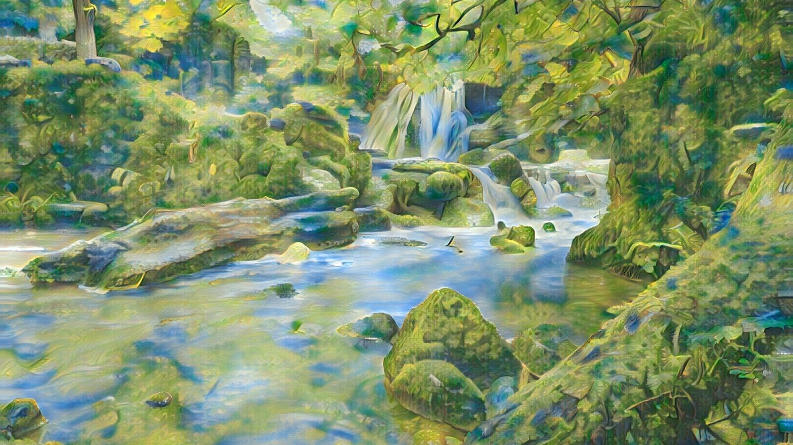
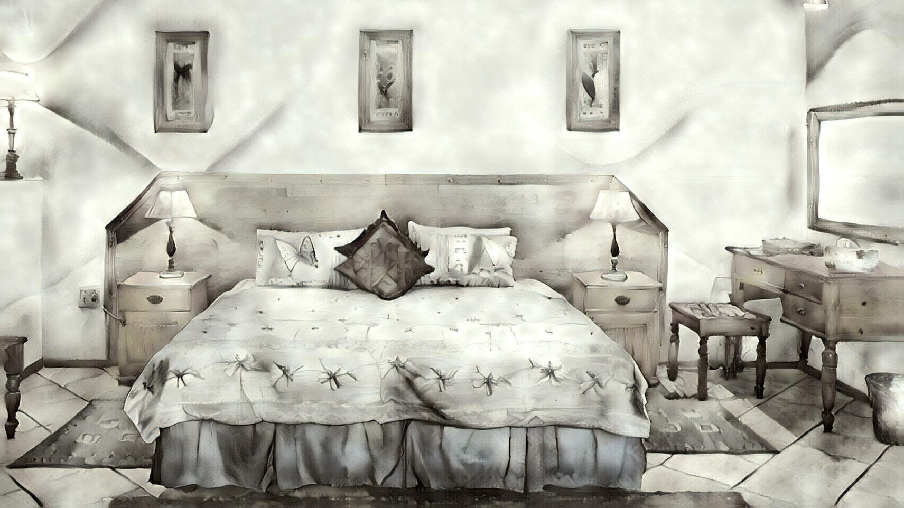

100% offline.
A world first.
Infusion is the world's first AI art app that runs entirely offline. Private, secure and portable, Infusion shows us what the future could be. Instead of selling your data to big corporations, Infusion hands your freedom to you.
Be ready for
when inspiration strikes.

Inspiration can strike any time. And when it does, you may not have an internet connection. Infusion is fully functional offline, which means you can use it anywhere, anytime, without needing an internet connection. Always be ready.
Your data is
the safest with you.

We believe that your data is the safest when you're not sharing it with anyone. With some clever programming, Infusion's AI algorithms operate entirely offline. With Infusion, you can have absolute privacy. Meanwhile, tech giants, your move.